Programmazione - Obiettivi Aziendali
Obiettivi aziendali – utente Amministratore
L'amministratore della PP&C procede all'inserimento all'interno della PP&C degli obiettivi definiti a livello aziendale dalla Direzione Strategica con il contributo dei CdR ed il coordinamento del controller. L'inserimento e la modifica degli obiettivi avviene mediante l'utilizzo della scheda "Obiettivi aziendali" (Figura 1), all'interno della quale per ciascun anno di budget viene visualizzata l'anagrafica obiettivi aziendale.
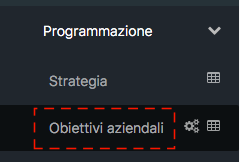
Gli obiettivi già creati saranno visibili all’interno della scheda “Obiettivi aziendali” e sono strutturati, come visibile in figura 2, in termini di:
- Codice
- Titolo
- Indicatori
- Origine
- Tipo
- Area Risultato
- Area
- CdR di assegnazione
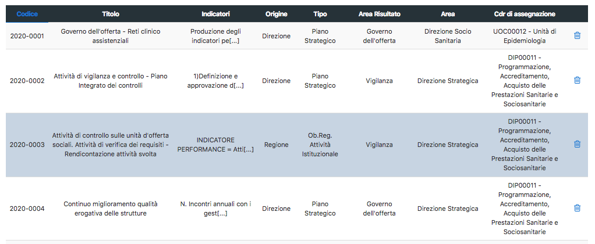
In caso di inserimento di obiettivi di tipo “Regionale” la corrispondente riga sarà evidenziata in modo da renderli maggiormente visibili. Nella parte alta della scheda “Obiettivi aziendali” è presente un filtro di ricerca e due pulsanti di estrazione in formato excel
- Estrazione obiettivi-cdr.xls: genera un file in formato excel contenente l’elenco degli obiettivi aziendali comprensivo di tutti i relativi dettagli e l’assegnazione ai CdR
- Estrazione obiettivi-cdr-personale.xls: genera un file in formato excel contenente gli obiettivi aziendali e le matricole del personale a cui gli stessi sono assegnati.
Inserimento di un nuovo obiettivo
Cliccando sul pulsante “+ Aggiungi” (figura 3) sarà possibile aggiungere un nuovo obiettivo aziendale.
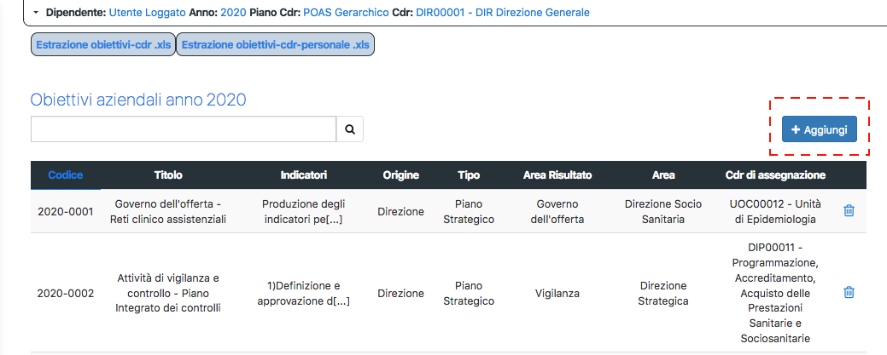
Si aprirà l’apposita maschera di inserimento (figura 4) in cui verrà chiesto di definire l’obiettivo in termini di Titolo, descrizione, origine, tipo, area risultato, area, indicatori (tutti i campi contrassegnati con l’asterisco sono obbligatori). Compilati tutti i campi sarà necessario cliccare sull’apposito pulsante “Inserisci” per salvare le modifiche e generare il nuovo obiettivo che riceverà, in automatico, un codice incrementale.
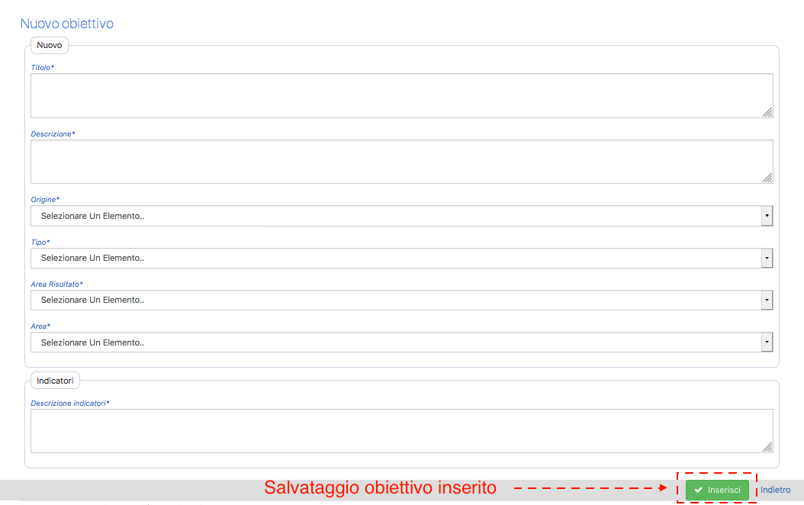
Assegnazione obiettivo ai CdR di primo livello
Una volta creato l'obiettivo nell'anagrafica obiettivi aziendali dell'anno di budget, l'amministratore selezionando l'obiettivo creato accederà al dettaglio dell'obiettivo ed in questa seconda fase visualizzerà le sezioni relative a:
- CDR associati all'obiettivo (figura 5): la piattaforma, mediante l'apposita funzionalità di "aggiungi" consentirà la selezione di un CdR dall'anagrafica dei CdR attivi nell'anno di budget formalizzando l'assegnazione dell'obiettivo al CdR in qualità di Referente, ovvero Responsabile delle attività di definizione delle azioni attuative e delle attività di rendicontazione intermedia e finale dell'obiettivo. In questa fase è possibile anche definire il peso (priorità) dell'obiettivo per il CdR selezionato, definizione che tuttavia potrà essere effettuata anche in un secondo momento utilizzando anche altri strumenti a disposizione dell'amministratore (Cruscotto di controllo e gestione pesi del singolo CdR).
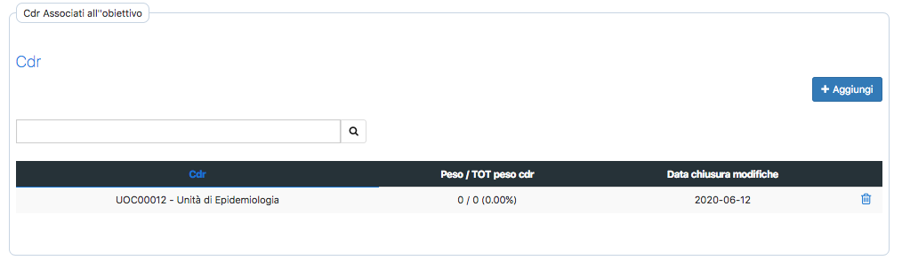
Una volta associato l'obiettivo ad un singolo CdR in qualità di referente, è possibile individuare eventuali co-referenti dell'obiettivo direttamente accedendo al dettaglio dell'associazione OBJ-CdR Referente ed aggiungendo gli eventuali co-referenti selezionandoli a partire dall'anagrafica CdR aziendali attivi nell'anno (anche in questo caso, come per l'assegnazione dell'obiettivo al referente, è possibile già in questa fase definire il peso dell'obiettivo per il CdR co-referente o rimandare tale attività ad una fase successiva).
- Indicatori associati all'obiettivo (figura 6): in questa sezione è possibile, mediante la funzionalità "aggiungi", associare all'obiettivo N indicatori presenti all'interno dell'anagrafica indicatori, definiti all'interno dell'apposita scheda "Indicatori". In relazione al numero di indicatori associati all'obiettivo, alla metrica di calcolo degli stessi, al calcolo del grado di raggiungimento rispetto ad un eventuale valore target aziendale o di CdR, inoltre, l'amministratore dovrà definire la modalità di calcolo del grado di raggiungimento dell'obiettivo a livello aziendale sulla base degli indicatori associati.
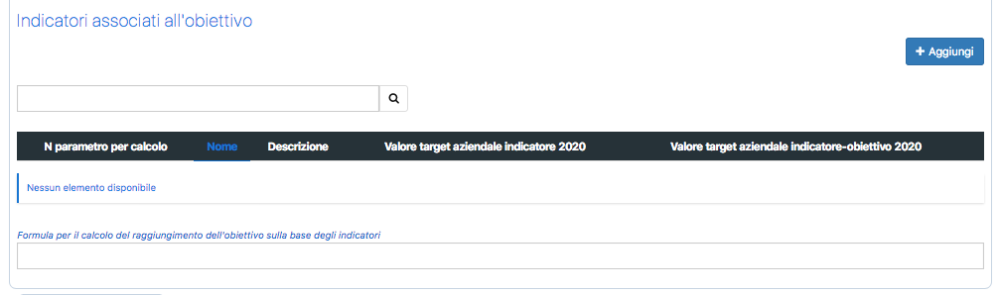
Gestione e modifica degli indicatori
All’interno della sezione “Indicatori” (Figura 6) sarà possibile cercare l’indicatore desiderato tramite l’apposito filtro di ricerca. A fianco, tramite il pulsante “Aggiungi” (Figura 7) verrà aperta una finestra per aggiungere un nuovo indicatore, dove sarà consentito:
- Selezionare il tipo di indicatore dall’elenco
- Aggiungere un nuovo tipo di indicatore, tramite il pulsante +
- Inserire il valore target aziendale indicatore - obiettivo per l'anno selezionato
- Gestire i diversi valori target dell’indicatore per l’obiettivo, tramite il pulsante “Aggiungi” che permetterà di selezionare il CDR per l’assegnazione del valore target, inserire il valore, ed eliminare il nuovo valore aggiunto.
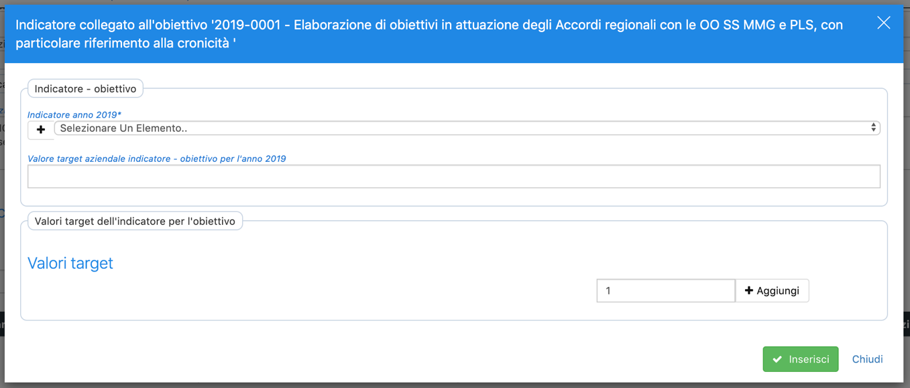
Cliccando sul simbolo “+” all’interno del campo indicatori per l’anno selezionato, verrà aperta una finestra (Figura 8) dove sarà possibile inserire una nuova tipologia di indicatore, riportando:
- Codice dell’indicatore
- Nome dell’indicatore
- Descrizione
- Istruzioni
- Possibilità di aggiunta dei diversi parametri tramite il pulsante “Aggiungi” (inserendo nome, tipo parametro - numero o testo, anno di introduzione e anno di termine)
- Formula per il calcolo del risultato
- Formula per il calcolo del raggiungimento
- Anno di inizio validità per l’indicatore
- Anno di fine validità per l’indicatore
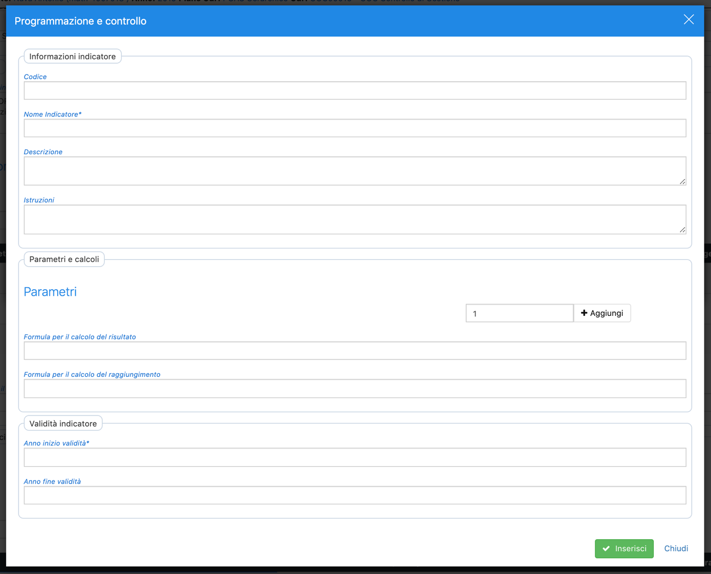
Cliccando sul pulsante “Aggiungi” verrà inserita la nuova tipologia di indicatore, cliccare invece su “Chiudi” per annullare l’operazione e tornare alla schermata precedente. Nella sezione degli indicatori associati all’obiettivo, verranno elencati gli indicatori già presenti e ogni riga riporterà:
- Numero del parametro utilizzato per il calcolo
- Nome dell’indicatore
- Descrizione dell’indicatore
- Valore target aziendale per l’indicatore nell’anno di budget selezionato
- Valore target aziendale rilevato per l’anno di budget selezionato
- Pulsante per l’eliminazione dell’indicatore
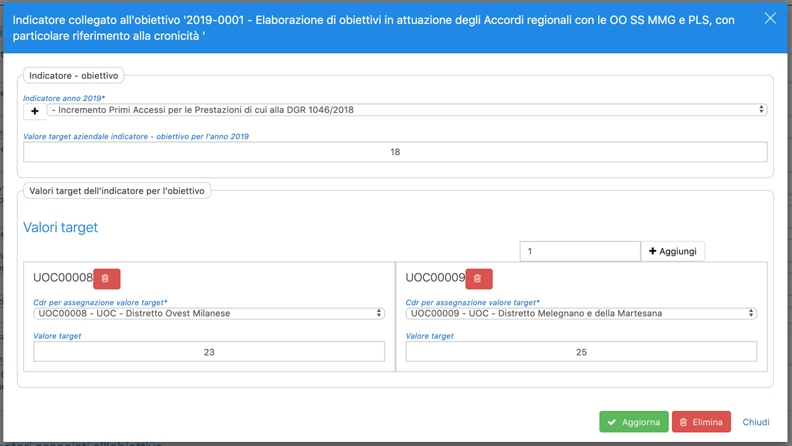
Cliccando su una singola riga si aprirà la finestra per la modifica dell’indicatore, dove sarà possibile:
- Modificare o aggiungere una nuova tipologia di indicatore
- Inserire il valore target aziendale rilevato per l’anno di budget selezionato
- Gestire i diversi valori target dell’indicatore per l’obiettivo
Strumenti di amministrazione
Sono presenti degli strumenti a disposizione dell’amministratore di sistema che consentono, da un lato la configurazione del modulo applicativo, dall’altro la possibilità di effettuare interventi di assegnazione/cancellazione obiettivi nel corso dell’anno di budget.
Configurazione della scheda “Obiettivi Aziendali”
Per accedere ai pannelli di configurazione della scheda l’amministratore di sistema dovrà cliccare sull’icona “Tabella” presente accanto alla voce di menù “Obiettivi aziendali” (Figura 10)
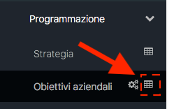
Si aprirà una nuova pagina (Figura 11), contenente diversi TAB, che consentirà di configurare gli attributi degli obiettivi (Area, Area Risultato, Tipo, Origine, Parere Azioni) e che successivamente appariranno all’interno dei “Menù a tendina” nella pagina di inserimento nuovo obiettivo (vedi figura 4). Ogni attributo è storicizzato in modo da poter definire l’anno di introduzione e quello di fine e sarà possibile aggiungere nuove tipologie cliccando sul tasto “+ Aggiungi” o eliminarne altre se non utilizzate (Icona “Cestino”).
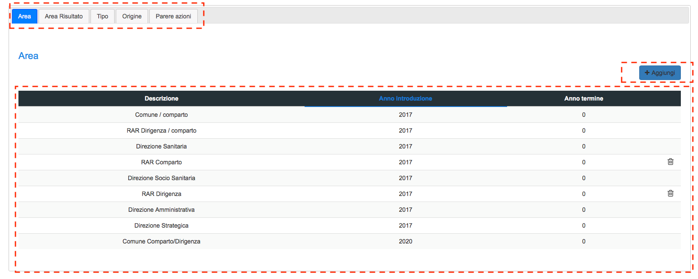
Gestione degli obiettivi nell’anno di Budget
Cliccando sull’icona “Ingranaggi” (figura 12), l’amministratore potrà apportare delle modifiche all’assegnazione degli obiettivi durante l’anno di budget.
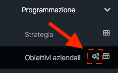
Si aprirà una pagina contenente due TAB:
- Obiettivi Individuali
- Responsabili cessati
TAB Obiettivi individuali
Cliccando sul TAB “obiettivi individuali” si avrà a disposizione l’elenco dei dipendenti assegnatari di obiettivi (Figura 13).
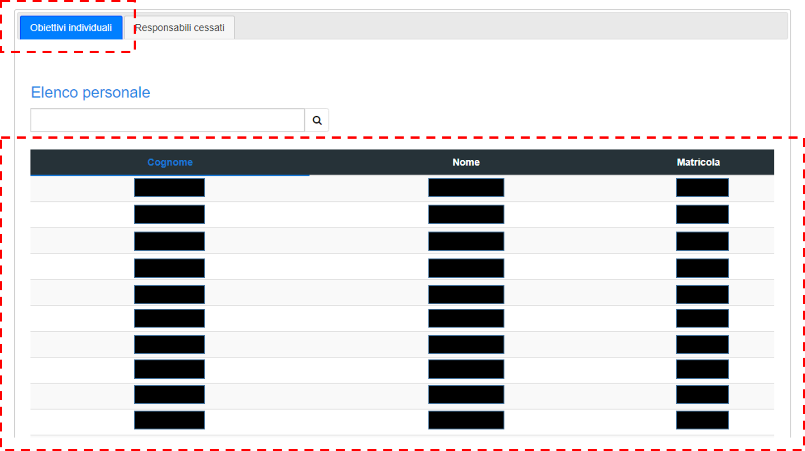
Cliccando sulla singola riga si aprirà la pagina di dettaglio che mostrerà tutti gli obiettivi assegnati al dipendente e il relativo peso; selezionando uno o più obiettivi sarà possibile procedere all’eliminazione dell’assegnazione dalle schede obiettivi individuali (Figura 14).
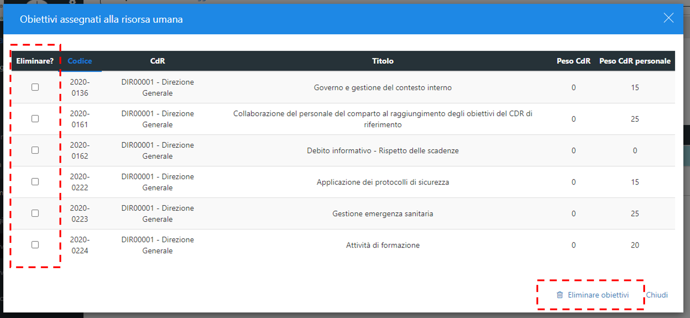
TAB Responsabili cessati
l'assegnazione degli obiettivi nei confronti dei responsabili di CdR prima della cessazione viene effettuata tramite l'assegnazione dell'obiettivo al CdR e non mediante formalizzazione di assegnazione dell'obiettivo al dipendente responsabile del CdR. Si rende necessario quindi garantire all'amministratore la possibilità di una formalizzazione dell'assegnazione ex-post, effettuata sulla base della motivazione della cessazione (trasferimento, collocamento a riposo, assegnazione ad altra UO, revoca incarico, ...) Tale operazione si effettua – analogamente a quanto indicato al punto precedente – attraverso il TAB “Responsabili cessati”, cliccando sul nominativo di interesse e, all’interno della pagina che si aprirà, procedendo all’assegnazione di uno o più obiettivi assegnati al CdR di precedente responsabilità (Figura 15)
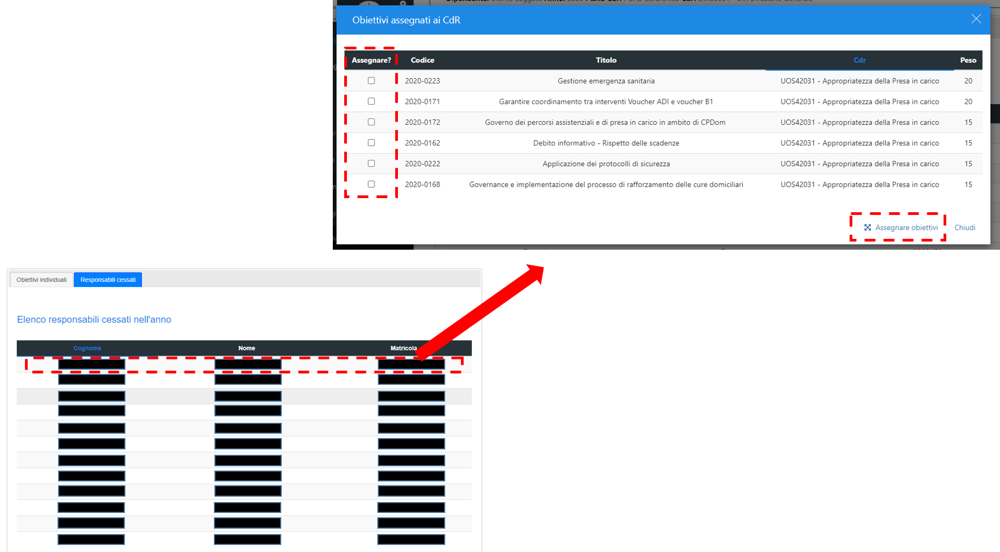